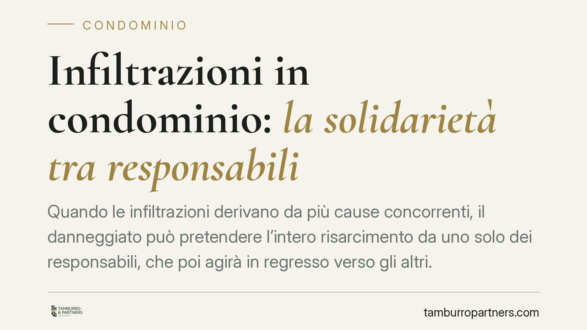

Infiltrazioni in condominio: la solidarietà tra responsabili
Quando le infiltrazioni derivano da più cause concorrenti, il danneggiato può pretendere l'intero risarcimento da uno solo dei responsabili, che poi agirà in regresso verso gli altri. È il principio della responsabilità solidale, ribadito dall'orientamento costante della Cassazione. Un tema rilevante per chi vive o amministra un condominio.

Il principio: responsabilità solidale
In materia di danni da infiltrazioni, accade spesso che le cause siano molteplici: un lastrico mal impermeabilizzato, uno scarico difettoso, un intervento manutentivo omesso. Quando più condotte concorrono a produrre lo stesso danno, l'ordinamento non obbliga il danneggiato a individuare la quota di responsabilità di ciascuno prima di agire.
Il danneggiato può rivolgersi a un solo responsabile e pretendere da lui l'intero risarcimento. Chi ha pagato si rivarrà poi sugli altri. È la logica della solidarietà, pensata per tutelare chi ha subìto il danno e non per avvantaggiare chi lo ha causato.
Inquadramento normativo
La norma di riferimento è l'art. 2055 del Codice civile, che va letto nei suoi tre commi:
- il primo comma stabilisce che, se il fatto dannoso è imputabile a più persone, tutte sono obbligate in solido al risarcimento;
- il secondo comma disciplina il regresso: chi ha risarcito può recuperare dagli altri responsabili le quote corrispondenti alla gravità delle rispettive colpe e all'entità delle conseguenze derivatene;
- il terzo comma pone una presunzione residuale: nel dubbio, le colpe si presumono uguali.
Questa struttura è coerente con l'orientamento costante della Corte di Cassazione, secondo cui la solidarietà opera ogni volta che le condotte concorrono a cagionare un danno unitario, a prescindere dal fatto che derivino da titoli diversi (per esempio, responsabilità contrattuale di un soggetto ed extracontrattuale di un altro).
Il caso specifico del lastrico solare e del terrazzo a uso esclusivo
Quando l'infiltrazione proviene dal lastrico solare o dal terrazzo a livello, entra in gioco una disciplina speciale. L'art. 1126 c.c. ripartisce le spese di riparazione del lastrico a uso esclusivo: un terzo a carico di chi lo usa in via esclusiva, due terzi a carico dei condomini dei piani sottostanti coperti dal lastrico.
Su questo punto le Sezioni Unite della Cassazione (sent. n. 9449/2016) hanno chiarito che, per i danni da infiltrazioni provenienti dal lastrico, i criteri di ripartizione dell'art. 1126 c.c. valgono anche in sede risarcitoria. La responsabilità ha natura di custodia (art. 2051 c.c.), e grava sia su chi ha l'uso esclusivo sia sul condominio quale custode della struttura. Qui l'art. 2055 c.c. interviene come regola di coordinamento tra i responsabili verso il danneggiato.
Implicazioni pratiche
Per il singolo condomino. Può trovarsi a dover pagare l'intero danno anche se la sua colpa è parziale. È, infatti, il soggetto più agevolmente escutibile se dispone di un patrimonio capiente. Il suo rimedio è l'azione di regresso verso gli altri responsabili.
Per il condominio. In quanto custode delle parti comuni, risponde dei danni a esse riconducibili e può essere chiamato a risarcire per intero, salvo poi ripartire internamente il peso economico.
Per il danneggiato. È la posizione più tutelata: può scegliere a chi indirizzare la richiesta, senza dover frazionare le domande. Attenzione, però: la rinuncia alla solidarietà non si presume mai. Se il danneggiato agisce contro un solo responsabile, non per questo libera gli altri. La rinuncia deve risultare da una dichiarazione espressa e inequivoca.
Cosa fare in concreto
- Documentate subito il danno. Raccogliete foto, video, perizie e verbali, datati, prima di qualsiasi intervento di ripristino.
- Richiedete un accertamento tecnico sulle cause. Individuare l'origine delle infiltrazioni è decisivo per distinguere responsabilità da custodia, contrattuali e concorrenti.
- Formalizzate le richieste per iscritto. La costituzione in mora interrompe la prescrizione e fissa la data di decorrenza degli interessi.
- Monitorate i termini di prescrizione. Per il danno da fatto illecito vale la prescrizione quinquennale (art. 2947 c.c.); verificate con un legale la decorrenza applicabile al vostro caso e al successivo regresso.
- Valutate l'azione di regresso con anticipo. Se siete il condomino o il condominio escusso per l'intero, predisponete per tempo la documentazione utile a recuperare le quote dagli altri responsabili.
Consigliamo di non procedere ai lavori di riparazione prima di aver cristallizzato la prova delle cause: un ripristino affrettato può compromettere l'accertamento delle responsabilità.
Contributo informativo a cura di Tamburro & Partners - Avv. Giuseppe Tamburro. Non costituisce parere legale.
Ogni condominio ha una storia a sé.
Se gestisci un'amministrazione e vuoi un confronto su una specifica questione condominiale, scrivi allo studio. Ti rispondiamo entro un giorno lavorativo.